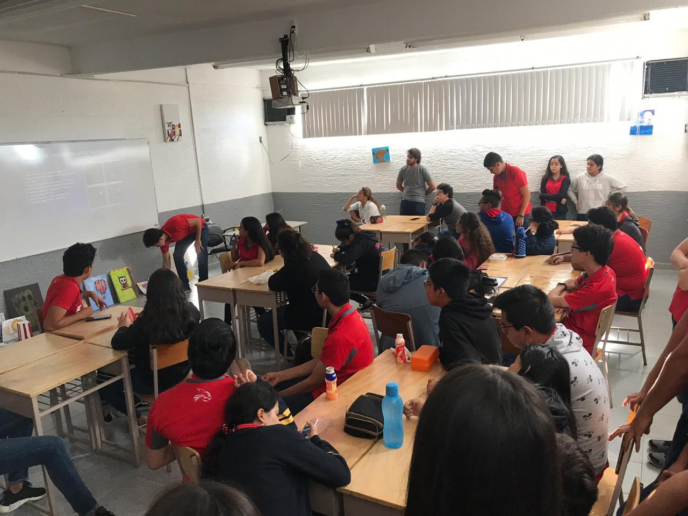

|
¡Hola! Somos Absolute Zero, y nuestro propósito es traer el interés en las ciencias naturales y sociales a todos nuestros compañeros y maestros en el Colegio Villa Rica. Nos reunimos todos los miércoles a las 10:00 AM, a través de la plataforma Microsoft Teams. Cada semana alternamos tema entre ciencias naturales y ciencias sociales. A veces también hay debates acerca del tema que se está presentando, en dónde todos son libres para participar y dar su opinión. ¿Te interesa? ¡Únete al club! |
||
|  |